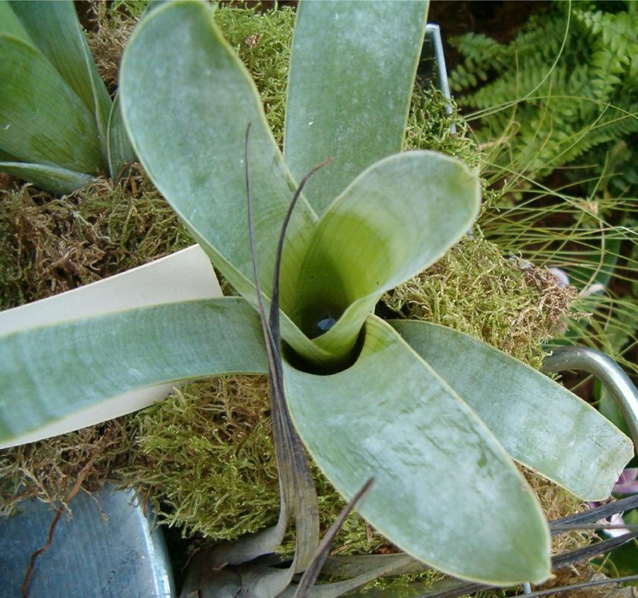

Planta N.º 01
Brocchinia reducta — Bromélia carnívora
Dificuldade intermediária
Características de cultivo
A Brocchinia reducta é uma bromélia especializada que forma uma roseta de folhas rígidas, verticais e sobrepostas, criando um reservatório central capaz de acumular água. Sua estrutura e suas adaptações permitem capturar pequenos animais, dos quais obtém nutrientes. Ao contrário de muitas plantas carnívoras de ambientes alagados, ela também precisa de atenção à circulação de ar e à condição das raízes.
- Iluminação
- Prefere iluminação muito intensa e pode receber sol direto quando aclimatada gradualmente. Em locais muito quentes, observe se as folhas apresentam sinais de queimadura ou desidratação. Uma posição clara, com boa ventilação, costuma ser essencial para um desenvolvimento saudável.
- Água e umidade
- Utilize água de baixa concentração mineral, como água da chuva limpa ou água destilada. A roseta pode manter água, mas é importante acompanhar sua qualidade e evitar que resíduos se acumulem. O substrato deve conservar alguma umidade sem ficar compactado e sem impedir a oxigenação das raízes.
- Substrato
- Prefira uma mistura pobre em nutrientes, leve e bem aerada, com materiais como esfagno, perlita e outros componentes adequados ao cultivo de plantas carnívoras. Não utilize terra comum, adubo orgânico ou substratos previamente fertilizados.
- Temperatura e ventilação
- Adapte a planta às condições locais e evite mudanças bruscas. Calor intenso associado a ar parado e substrato encharcado pode favorecer problemas nas raízes. Uma boa circulação de ar ajuda a manter a planta saudável.
- Alimentação
- Não é necessário colocar insetos manualmente na roseta. Em condições adequadas, a planta pode capturar pequenas presas naturalmente. Nunca ofereça carne, restos de alimentos ou fertilizantes convencionais.
- Propagação
- Pode ocorrer por sementes ou por brotações laterais, dependendo da planta e das condições de cultivo. Separe brotos somente quando estiverem suficientemente desenvolvidos para sobreviver de forma independente.